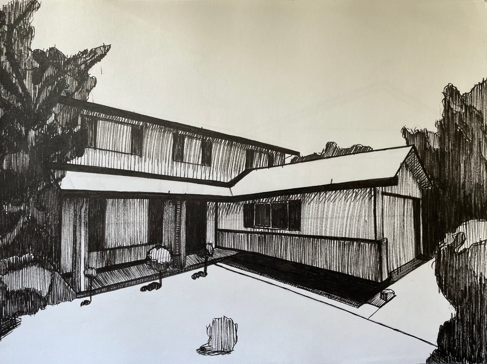

Neighborhood House
- Medium
- Ink brush pen
I focused on hatching when working with an ink brush pen. I could only use lines to give each part of the house a value, so I incorporated the use of directional lines when hatching. This technique was particularly challenging because I had mainly worked with mediums where I could blend to get the desired value, whereas this one was only layering.